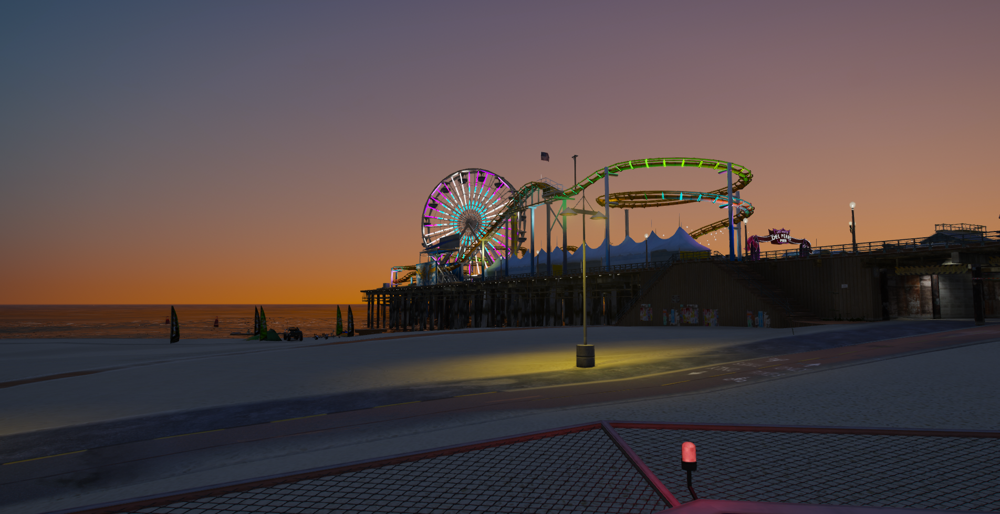
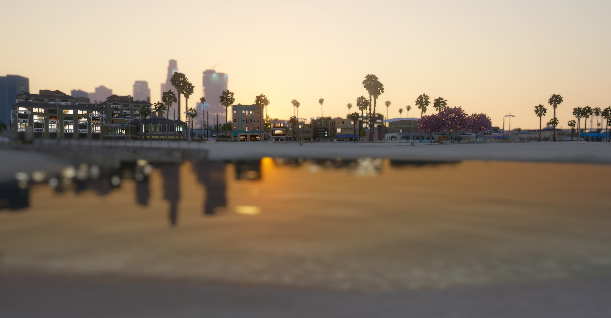

About the club

History Of The Club
The Devils Disciples Motorcycle Club is an MC founded in 1973 by Vince Hudson originating in New York City. In the early 2000s the club fell on tough times due to a run-in with law enforcement, the organization crumbled when some of the founding members were imprisoned and some killed. In early 2018 the club was re-established by Vince’s son Kevin Hudson, who opened a charter in Vespucci, Los Santos where the club currently resides. The Devils Disciples are a 1% MC through and through and intend to stay true to that at all costs.
What is a 1% Motorcycle club?
The American Motorcycle Association is to have coined the moniker 1%er In 1947 the AMA held a Motorcycle rally that was plagued by violence and hooliganism. As a result of this the AMA said "99 percent of the Motorcycle riding public are law abiding; there is 1 percent who are not." The 1% patch was then created and became a Motorcycle subculture indicating those who wore the 1% patch were known for "Outlaw Ways"
Club Colors
The primary club colors are red white and black.
Club Bikes
DDMC members MUST ride Americian made Motorcycles, Sports bikes and dirt bikes are not permitted.
The Original Club Patch
The new Club Patch
Territory
 The Devil's Disciples currently hold down the entirity of vespucci from vespucci beach to the vespucci canals. The Club takes interest in the businesses in the area offering protection and making sure the businesses thrive. Over the years DDMC has moved clubhouse's they currently reside in the old lifeguard tower on the south end of the beach.
How To become a member
To become a member of DDMC you must introduce yourself to a member and hang around the club, there is no process for becoming a hangaround simply hang around the club and eventually if the club wants you as member you will be asked to become a prospect. If you pass through a prospect phase you will then be accepted as a full patched member of the club
Out Of Character Information
Disclaimer: The Devil's Disciples MC is a fictional club on a Grand Theft Auto Roleplay Server. The club is by no means affiliated with any crime organizations or Outlaw motorcycle clubs. The Grand Theft Auto Server DDMC resides is called newday rp. Click on the image below to visit Newday's Website: